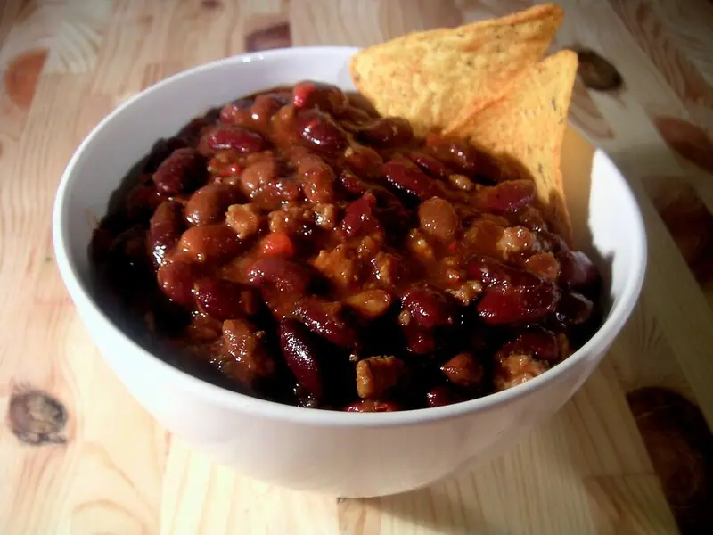

Фото: Carstor, CC BY-SA 2.5

Чили кон карне
Острое мясное рагу из фарша с красной фасолью и томатами
70 мин4 порц.550 ккал на порциюБ 31 · Ж 33 · У 31Американская кухня
Продукты на 4 порц.
- Говяжий фарш500 г
- Лук репчатый2 шт
- Чеснок3 зуб.
- Перец болгарский1 шт
- Томаты в собственном соку1 банка
- Томатная паста1 ст. л.
- Фасоль консервированная1 банка
- Перец чили1 шт
- Зира1 ч. л.
- Паприка2 ч. л.
- Растительное масло2 ст. л.
- Соль1 ч. л.
- Вода0,75 стак.
Как готовить
- Лук и перец нарежьте кубиком, чеснок и чили мелко.
- Разогрейте масло в сотейнике на среднем огне, обжарьте лук и перец 6 минут до мягкости.
- Добавьте фарш, разбивайте лопаткой, жарьте 8-10 минут до коричневого цвета.
- Всыпьте кумин, паприку, чеснок и чили, жарьте 1 минуту до аромата. Добавьте томатную пасту.
- Положите томаты и воду, посолите. Тушите под крышкой на слабом огне 30 минут.
- Добавьте промытую фасоль и тушите ещё 10-15 минут без крышки до густоты.
Совет. Остроту регулируйте количеством чили, семена держите отдельно. Подавайте с рисом или лепёшками, на второй день вкус ярче.